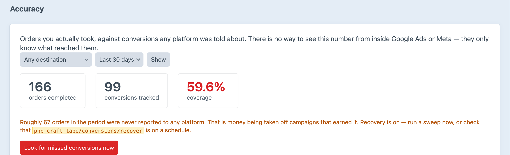
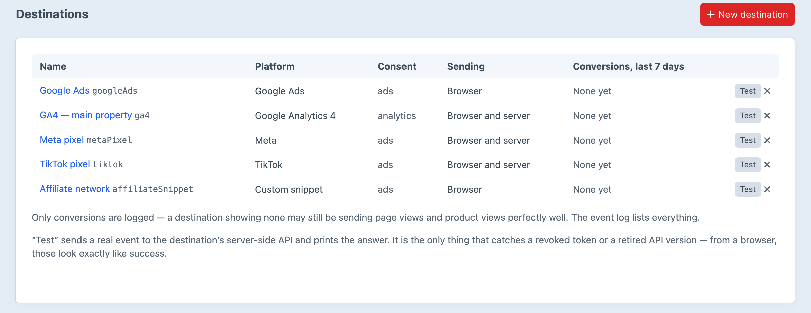

Every conversion, counted once.
Thirteen ad and analytics pixels, the Commerce funnel behind them, Consent Mode v2 in front of them, and server-side tracking underneath.
Browser tracking loses somewhere between a tenth and nearly half of real orders, for ordinary reasons.
Everything becomes the same event before anything platform-specific happens. The browser tag and the Conversions API are that one event, so the platform deduplicates instead of double-counting.
craft.tape.track()tape.track() in JSfbq('track', 'Purchase', {…},
{ eventID: '7f3c9a2e-…' })
{ event_name: 'Purchase',
event_id: '7f3c9a2e-…', … }
A custom snippet for anything else, and a webhook. Two of the same platform is normal: an agency pixel and a client pixel are two destinations.
Consent has three states. "Not yet answered" is its own, and it decides whether a tag waits or gives up.
Reads Cookiebot, CookieYes, Complianz, Iubenda, OneTrust, Osano, Termly, Klaro, Usercentrics and Civic, or a JavaScript expression of your own. With your own banner, it is one call: tape.consent.update()

Pick a platform, paste in the ID, choose its consent category. Switch on the server side where the platform has one.

Test sends a real event to each server-side API and shows the answer. A revoked token looks like success from a browser.